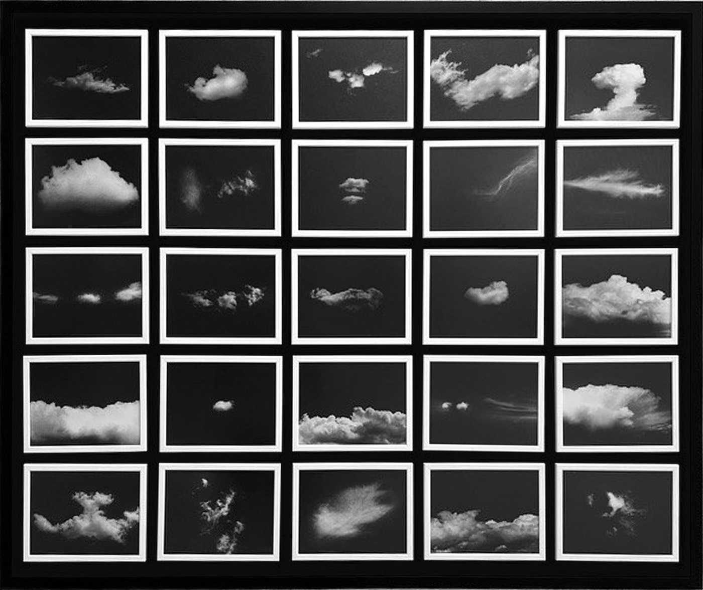

Volodymyr Demkiv
Each series hangs in a space made for it, from a museum hall to a warehouse in London. Drag to look around, tap a print to step closer, scroll or pinch to move. Every print is framed in thin black with a white mat.
photoMIAMI 2026
The nine as hung at photoMIAMI, then all ten prints large, in two rooms high over Biscayne Bay.
A long corridor under a light slot opening into a tall daylit hall
Shop windows onto a brick street, and a skylit back room
Three panelled rooms in a row, oak parquet, French windows onto the boulevard

Brick, timber beams and steel windows, with a white side room
Terrazzo floor and a glass wall onto the sand and sea
Two concrete pavilions joined by a glass corridor through canyon hills
Larch ceiling and a long window onto a valley village and mountains
Sandstone walls, tall windows onto water and green hills